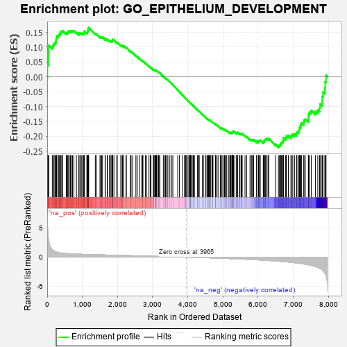
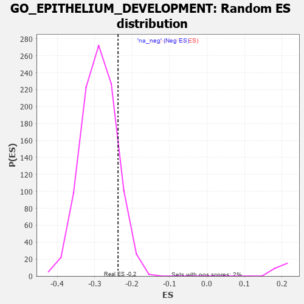

| | | Dataset | 7d |
| Phenotype | NoPhenotypeAvailable |
| Upregulated in class | na_neg |
| GeneSet | GO_EPITHELIUM_DEVELOPMENT |
| Enrichment Score (ES) | -0.23748134 |
| Normalized Enrichment Score (NES) | -0.8219601 |
| Nominal p-value | 0.8760246 |
| FDR q-value | 0.9842491 |
| FWER p-Value | 1.0 |
Table: GSEA Results Summary

Fig 1: Enrichment plot: GO_EPITHELIUM_DEVELOPMENT
Profile of the Running ES Score & Positions of GeneSet Members on the Rank Ordered List
| PROBE | GENE SYMBOL | GENE_TITLE | RANK IN GENE LIST | RANK METRIC SCORE | RUNNING ES | CORE ENRICHMENT | | 1 | ST14 | | | 7 | 5.713 | 0.0419 | No |
| 2 | MEOX1 | | | 39 | 3.159 | 0.0615 | No |
| 3 | SIX2 | | | 40 | 3.152 | 0.0852 | No |
| 4 | LIPM | | | 45 | 2.860 | 0.1061 | No |
| 5 | CASP6 | | | 145 | 1.300 | 0.1030 | No |
| 6 | FOXF1 | | | 176 | 1.136 | 0.1076 | No |
| 7 | WNT16 | | | 198 | 1.072 | 0.1129 | No |
| 8 | SMAD5 | | | 231 | 0.979 | 0.1161 | No |
| 9 | INSM1 | | | 250 | 0.939 | 0.1208 | No |
| 10 | LBX1 | | | 254 | 0.929 | 0.1274 | No |
| 11 | TBX20 | | | 267 | 0.880 | 0.1324 | No |
| 12 | HGF | | | 276 | 0.870 | 0.1379 | No |
| 13 | ARX | | | 322 | 0.782 | 0.1379 | No |
| 14 | DLL1 | | | 337 | 0.760 | 0.1418 | No |
| 15 | GSK3A | | | 351 | 0.745 | 0.1457 | No |
| 16 | AXIN2 | | | 383 | 0.713 | 0.1470 | No |
| 17 | BAX | | | 387 | 0.711 | 0.1520 | No |
| 18 | ALX4 | | | 413 | 0.686 | 0.1539 | No |
| 19 | SUFU | | | 443 | 0.665 | 0.1551 | No |
| 20 | SRF | | | 542 | 0.615 | 0.1470 | No |
| 21 | NLE1 | | | 565 | 0.609 | 0.1487 | No |
| 22 | ALX1 | | | 590 | 0.598 | 0.1501 | No |
| 23 | PITX3 | | | 594 | 0.596 | 0.1542 | No |
| 24 | GLMN | | | 632 | 0.583 | 0.1537 | No |
| 25 | HES5 | | | 661 | 0.571 | 0.1544 | No |
| 26 | FST | | | 698 | 0.560 | 0.1539 | No |
| 27 | ID1 | | | 719 | 0.555 | 0.1555 | No |
| 28 | ZIC3 | | | 760 | 0.542 | 0.1544 | No |
| 29 | LDB2 | | | 831 | 0.523 | 0.1492 | No |
| 30 | NSUN2 | | | 901 | 0.506 | 0.1441 | No |
| 31 | STOX1 | | | 905 | 0.506 | 0.1475 | No |
| 32 | TDRD7 | | | 936 | 0.498 | 0.1473 | No |
| 33 | DVL3 | | | 971 | 0.490 | 0.1466 | No |
| 34 | MEN1 | | | 1003 | 0.483 | 0.1462 | No |
| 35 | AKT1 | | | 1040 | 0.476 | 0.1451 | No |
| 36 | YAP1 | | | 1041 | 0.475 | 0.1486 | No |
| 37 | MEF2C | | | 1054 | 0.473 | 0.1506 | No |
| 38 | RBM15 | | | 1057 | 0.473 | 0.1539 | No |
| 39 | SRC | | | 1128 | 0.459 | 0.1483 | No |
| 40 | EMX1 | | | 1143 | 0.455 | 0.1499 | No |
| 41 | MTSS1 | | | 1149 | 0.454 | 0.1526 | No |
| 42 | PSMD7 | | | 1152 | 0.454 | 0.1558 | No |
| 43 | GRSF1 | | | 1164 | 0.452 | 0.1577 | No |
| 44 | RFX3 | | | 1171 | 0.451 | 0.1603 | No |
| 45 | ERCC3 | | | 1173 | 0.451 | 0.1636 | No |
| 46 | PSMD2 | | | 1181 | 0.450 | 0.1660 | No |
| 47 | EDF1 | | | 1369 | 0.415 | 0.1449 | No |
| 48 | SSBP3 | | | 1396 | 0.411 | 0.1447 | No |
| 49 | E2F4 | | | 1501 | 0.390 | 0.1341 | No |
| 50 | LIAS | | | 1524 | 0.387 | 0.1342 | No |
| 51 | SOS1 | | | 1547 | 0.384 | 0.1342 | No |
| 52 | FZD1 | | | 1574 | 0.379 | 0.1337 | No |
| 53 | RXRA | | | 1647 | 0.365 | 0.1271 | No |
| 54 | ESRP1 | | | 1653 | 0.364 | 0.1291 | No |
| 55 | ERCC2 | | | 1712 | 0.354 | 0.1243 | No |
| 56 | PLOD3 | | | 1715 | 0.353 | 0.1267 | No |
| 57 | LRP5 | | | 1769 | 0.342 | 0.1224 | No |
| 58 | PSMD4 | | | 1811 | 0.335 | 0.1196 | No |
| 59 | GATA4 | | | 1837 | 0.330 | 0.1188 | No |
| 60 | AP2S1 | | | 1846 | 0.329 | 0.1202 | No |
| 61 | TCF7 | | | 1848 | 0.328 | 0.1226 | No |
| 62 | PSMD6 | | | 1858 | 0.326 | 0.1238 | No |
| 63 | SMAD4 | | | 1860 | 0.326 | 0.1262 | No |
| 64 | SIM1 | | | 1898 | 0.321 | 0.1238 | No |
| 65 | BRSK2 | | | 1979 | 0.308 | 0.1157 | No |
| 66 | ROR1 | | | 1993 | 0.306 | 0.1163 | No |
| 67 | FOXD1 | | | 2093 | 0.292 | 0.1057 | No |
| 68 | BMP7 | | | 2107 | 0.290 | 0.1062 | No |
| 69 | PSME4 | | | 2143 | 0.285 | 0.1038 | No |
| 70 | ATOH8 | | | 2145 | 0.285 | 0.1058 | No |
| 71 | DDR1 | | | 2176 | 0.280 | 0.1040 | No |
| 72 | CREB1 | | | 2243 | 0.269 | 0.0975 | No |
| 73 | PSMF1 | | | 2251 | 0.268 | 0.0986 | No |
| 74 | MPP5 | | | 2362 | 0.251 | 0.0862 | No |
| 75 | PELO | | | 2386 | 0.247 | 0.0851 | No |
| 76 | MET | | | 2430 | 0.240 | 0.0813 | No |
| 77 | SALL4 | | | 2523 | 0.223 | 0.0710 | No |
| 78 | PSMD5 | | | 2560 | 0.218 | 0.0680 | No |
| 79 | ETV4 | | | 2621 | 0.209 | 0.0618 | No |
| 80 | KDM6A | | | 2690 | 0.200 | 0.0545 | No |
| 81 | PHB2 | | | 2712 | 0.197 | 0.0533 | No |
| 82 | SLIT2 | | | 2724 | 0.195 | 0.0533 | No |
| 83 | AQP3 | | | 2796 | 0.184 | 0.0455 | No |
| 84 | PCK2 | | | 2823 | 0.180 | 0.0435 | No |
| 85 | FGFR2 | | | 2895 | 0.167 | 0.0355 | No |
| 86 | ACVR1 | | | 2932 | 0.161 | 0.0321 | No |
| 87 | RAB10 | | | 2952 | 0.157 | 0.0308 | No |
| 88 | WNT4 | | | 3023 | 0.146 | 0.0228 | No |
| 89 | BRCA2 | | | 3024 | 0.146 | 0.0239 | No |
| 90 | LEF1 | | | 3037 | 0.144 | 0.0234 | No |
| 91 | KEAP1 | | | 3063 | 0.141 | 0.0213 | No |
| 92 | RBBP6 | | | 3066 | 0.141 | 0.0221 | No |
| 93 | HDAC1 | | | 3086 | 0.138 | 0.0206 | No |
| 94 | TIGAR | | | 3091 | 0.138 | 0.0211 | No |
| 95 | RREB1 | | | 3099 | 0.137 | 0.0213 | No |
| 96 | GPX1 | | | 3109 | 0.135 | 0.0211 | No |
| 97 | BTBD7 | | | 3143 | 0.131 | 0.0178 | No |
| 98 | PAX6 | | | 3170 | 0.127 | 0.0154 | No |
| 99 | PSMD9 | | | 3179 | 0.125 | 0.0153 | No |
| 100 | FZR1 | | | 3205 | 0.122 | 0.0130 | No |
| 101 | SMAD3 | | | 3303 | 0.105 | 0.0012 | No |
| 102 | SMAD1 | | | 3337 | 0.099 | -0.0023 | No |
| 103 | FMN1 | | | 3363 | 0.095 | -0.0049 | No |
| 104 | SMAD7 | | | 3369 | 0.093 | -0.0048 | No |
| 105 | YIPF6 | | | 3404 | 0.089 | -0.0086 | No |
| 106 | MED1 | | | 3405 | 0.089 | -0.0079 | No |
| 107 | AP2A2 | | | 3433 | 0.085 | -0.0107 | No |
| 108 | GLI1 | | | 3489 | 0.079 | -0.0173 | No |
| 109 | DMRT1 | | | 3546 | 0.068 | -0.0240 | No |
| 110 | EXOC5 | | | 3574 | 0.064 | -0.0270 | No |
| 111 | NF1 | | | 3713 | 0.040 | -0.0446 | No |
| 112 | SKI | | | 3762 | 0.032 | -0.0506 | No |
| 113 | ITPK1 | | | 3851 | 0.020 | -0.0618 | No |
| 114 | JAG2 | | | 3903 | 0.010 | -0.0683 | No |
| 115 | CCM2 | | | 3933 | 0.005 | -0.0721 | No |
| 116 | KLK13 | | | 3944 | 0.003 | -0.0733 | No |
| 117 | GPC6 | | | 3950 | 0.002 | -0.0740 | No |
| 118 | EYA1 | | | 3987 | -0.006 | -0.0786 | No |
| 119 | TOR1A | | | 4030 | -0.013 | -0.0839 | No |
| 120 | VEZF1 | | | 4033 | -0.013 | -0.0841 | No |
| 121 | SFRP2 | | | 4065 | -0.018 | -0.0880 | No |
| 122 | ROBO2 | | | 4066 | -0.018 | -0.0878 | No |
| 123 | CSF1 | | | 4074 | -0.019 | -0.0886 | No |
| 124 | TCF15 | | | 4077 | -0.020 | -0.0887 | No |
| 125 | WNT2 | | | 4084 | -0.021 | -0.0893 | No |
| 126 | MTOR | | | 4114 | -0.025 | -0.0929 | No |
| 127 | ABL1 | | | 4125 | -0.027 | -0.0940 | No |
| 128 | HNF4A | | | 4157 | -0.034 | -0.0977 | No |
| 129 | PDX1 | | | 4179 | -0.038 | -0.1002 | No |
| 130 | AP2B1 | | | 4185 | -0.039 | -0.1005 | No |
| 131 | PSME3 | | | 4280 | -0.056 | -0.1123 | No |
| 132 | WNT11 | | | 4282 | -0.056 | -0.1120 | No |
| 133 | TBX2 | | | 4303 | -0.060 | -0.1141 | No |
| 134 | CD109 | | | 4325 | -0.064 | -0.1164 | No |
| 135 | RALA | | | 4416 | -0.079 | -0.1274 | No |
| 136 | SETD2 | | | 4443 | -0.084 | -0.1302 | No |
| 137 | ILK | | | 4510 | -0.096 | -0.1380 | No |
| 138 | WNT5B | | | 4517 | -0.098 | -0.1380 | No |
| 139 | ABI2 | | | 4554 | -0.106 | -0.1419 | No |
| 140 | SGPP1 | | | 4573 | -0.112 | -0.1434 | No |
| 141 | CBR1 | | | 4589 | -0.116 | -0.1445 | No |
| 142 | GATA3 | | | 4614 | -0.120 | -0.1467 | No |
| 143 | ATOH1 | | | 4615 | -0.121 | -0.1458 | No |
| 144 | DLG5 | | | 4619 | -0.121 | -0.1453 | No |
| 145 | TAF10 | | | 4652 | -0.128 | -0.1485 | No |
| 146 | PTK7 | | | 4687 | -0.136 | -0.1518 | No |
| 147 | RAP1B | | | 4706 | -0.140 | -0.1531 | No |
| 148 | LHX2 | | | 4716 | -0.143 | -0.1532 | No |
| 149 | RTN4 | | | 4783 | -0.154 | -0.1606 | No |
| 150 | MYO5A | | | 4787 | -0.155 | -0.1598 | No |
| 151 | CD151 | | | 4791 | -0.156 | -0.1591 | No |
| 152 | WDR1 | | | 4824 | -0.163 | -0.1620 | No |
| 153 | DLG1 | | | 4860 | -0.169 | -0.1652 | No |
| 154 | ATRX | | | 4929 | -0.184 | -0.1727 | No |
| 155 | FZD4 | | | 4940 | -0.186 | -0.1726 | No |
| 156 | EP300 | | | 4941 | -0.186 | -0.1712 | No |
| 157 | PRKDC | | | 4955 | -0.189 | -0.1714 | No |
| 158 | PROM1 | | | 4996 | -0.197 | -0.1751 | No |
| 159 | KLF4 | | | 5005 | -0.198 | -0.1747 | No |
| 160 | PDPK1 | | | 5043 | -0.207 | -0.1779 | No |
| 161 | RAP2C | | | 5073 | -0.218 | -0.1801 | No |
| 162 | FLNB | | | 5082 | -0.220 | -0.1794 | No |
| 163 | MMP9 | | | 5108 | -0.227 | -0.1810 | No |
| 164 | TBX1 | | | 5166 | -0.241 | -0.1865 | No |
| 165 | SMO | | | 5195 | -0.247 | -0.1883 | No |
| 166 | ATM | | | 5210 | -0.249 | -0.1883 | No |
| 167 | GPR4 | | | 5219 | -0.250 | -0.1874 | No |
| 168 | FOXJ2 | | | 5249 | -0.257 | -0.1893 | No |
| 169 | PTEN | | | 5262 | -0.261 | -0.1889 | No |
| 170 | CDK1 | | | 5264 | -0.262 | -0.1870 | No |
| 171 | EPHA4 | | | 5273 | -0.265 | -0.1861 | No |
| 172 | FAT1 | | | 5281 | -0.267 | -0.1850 | No |
| 173 | MAGI2 | | | 5295 | -0.269 | -0.1847 | No |
| 174 | FKBP8 | | | 5296 | -0.270 | -0.1826 | No |
| 175 | TCF21 | | | 5340 | -0.283 | -0.1861 | No |
| 176 | FZD5 | | | 5386 | -0.292 | -0.1897 | No |
| 177 | PLK4 | | | 5397 | -0.295 | -0.1888 | No |
| 178 | SOX8 | | | 5404 | -0.296 | -0.1874 | No |
| 179 | LATS1 | | | 5412 | -0.298 | -0.1860 | No |
| 180 | CPT1A | | | 5467 | -0.311 | -0.1907 | No |
| 181 | STIL | | | 5483 | -0.314 | -0.1903 | No |
| 182 | VDR | | | 5517 | -0.325 | -0.1921 | No |
| 183 | SIDT2 | | | 5542 | -0.331 | -0.1928 | No |
| 184 | FGFR1 | | | 5543 | -0.332 | -0.1903 | No |
| 185 | ROR2 | | | 5626 | -0.353 | -0.1983 | No |
| 186 | PSMD1 | | | 5674 | -0.367 | -0.2016 | No |
| 187 | ELF3 | | | 5768 | -0.396 | -0.2107 | No |
| 188 | BBS4 | | | 5806 | -0.407 | -0.2124 | No |
| 189 | ANXA7 | | | 5827 | -0.413 | -0.2119 | No |
| 190 | BBS5 | | | 5862 | -0.421 | -0.2132 | No |
| 191 | RAB13 | | | 5870 | -0.425 | -0.2109 | No |
| 192 | PRDM1 | | | 5956 | -0.457 | -0.2185 | No |
| 193 | B9D1 | | | 5962 | -0.459 | -0.2157 | No |
| 194 | XBP1 | | | 6011 | -0.475 | -0.2183 | No |
| 195 | PRKX | | | 6016 | -0.477 | -0.2153 | No |
| 196 | RAC1 | | | 6036 | -0.484 | -0.2141 | No |
| 197 | JAG1 | | | 6060 | -0.494 | -0.2134 | No |
| 198 | STK4 | | | 6145 | -0.518 | -0.2204 | No |
| 199 | ROCK1 | | | 6152 | -0.520 | -0.2173 | No |
| 200 | THRB | | | 6178 | -0.531 | -0.2165 | No |
| 201 | KLF2 | | | 6182 | -0.532 | -0.2129 | No |
| 202 | MYO1E | | | 6200 | -0.537 | -0.2111 | No |
| 203 | SMAD2 | | | 6216 | -0.541 | -0.2090 | No |
| 204 | CDC42 | | | 6236 | -0.548 | -0.2074 | No |
| 205 | IFT52 | | | 6280 | -0.566 | -0.2087 | No |
| 206 | IFT57 | | | 6307 | -0.579 | -0.2077 | No |
| 207 | LAMA1 | | | 6496 | -0.659 | -0.2271 | No |
| 208 | ROBO1 | | | 6577 | -0.699 | -0.2322 | Yes |
| 209 | MKS1 | | | 6607 | -0.715 | -0.2306 | Yes |
| 210 | WWTR1 | | | 6631 | -0.729 | -0.2282 | Yes |
| 211 | PTPRS | | | 6646 | -0.738 | -0.2245 | Yes |
| 212 | TMED2 | | | 6665 | -0.746 | -0.2212 | Yes |
| 213 | PAK1 | | | 6691 | -0.757 | -0.2188 | Yes |
| 214 | EGFR | | | 6708 | -0.765 | -0.2151 | Yes |
| 215 | DMRT2 | | | 6718 | -0.768 | -0.2105 | Yes |
| 216 | GSK3B | | | 6719 | -0.768 | -0.2048 | Yes |
| 217 | C2CD3 | | | 6783 | -0.802 | -0.2069 | Yes |
| 218 | WDR19 | | | 6796 | -0.812 | -0.2024 | Yes |
| 219 | ADAM9 | | | 6808 | -0.819 | -0.1977 | Yes |
| 220 | AHI1 | | | 6860 | -0.848 | -0.1979 | Yes |
| 221 | MIB1 | | | 6932 | -0.890 | -0.2005 | Yes |
| 222 | FAT4 | | | 6948 | -0.901 | -0.1957 | Yes |
| 223 | PDE2A | | | 6985 | -0.927 | -0.1934 | Yes |
| 224 | RIPK4 | | | 7034 | -0.961 | -0.1924 | Yes |
| 225 | BBS7 | | | 7089 | -0.988 | -0.1920 | Yes |
| 226 | RYK | | | 7102 | -1.000 | -0.1860 | Yes |
| 227 | WHRN | | | 7139 | -1.025 | -0.1830 | Yes |
| 228 | AR | | | 7169 | -1.046 | -0.1789 | Yes |
| 229 | HYDIN | | | 7173 | -1.049 | -0.1715 | Yes |
| 230 | OVOL2 | | | 7197 | -1.068 | -0.1665 | Yes |
| 231 | IFT74 | | | 7211 | -1.085 | -0.1600 | Yes |
| 232 | CNFN | | | 7232 | -1.102 | -0.1543 | Yes |
| 233 | MSX2 | | | 7299 | -1.171 | -0.1541 | Yes |
| 234 | MYO7A | | | 7302 | -1.175 | -0.1456 | Yes |
| 235 | OVOL1 | | | 7341 | -1.214 | -0.1414 | Yes |
| 236 | KLF5 | | | 7429 | -1.304 | -0.1429 | Yes |
| 237 | LHX1 | | | 7431 | -1.305 | -0.1333 | Yes |
| 238 | SPDEF | | | 7436 | -1.313 | -0.1239 | Yes |
| 239 | NPY | | | 7465 | -1.356 | -0.1174 | Yes |
| 240 | VDAC1 | | | 7512 | -1.409 | -0.1128 | Yes |
| 241 | PKD1 | | | 7628 | -1.611 | -0.1156 | Yes |
| 242 | MYO6 | | | 7697 | -1.753 | -0.1113 | Yes |
| 243 | CASP3 | | | 7747 | -1.902 | -0.1034 | Yes |
| 244 | PDE4D | | | 7764 | -1.944 | -0.0909 | Yes |
| 245 | TRAF6 | | | 7818 | -2.157 | -0.0816 | Yes |
| 246 | PKD2 | | | 7822 | -2.167 | -0.0658 | Yes |
| 247 | DLX5 | | | 7845 | -2.378 | -0.0508 | Yes |
| 248 | CAV3 | | | 7896 | -2.739 | -0.0368 | Yes |
| 249 | PSMD3 | | | 7907 | -2.887 | -0.0165 | Yes |
| 250 | PSMD8 | | | 7931 | -3.286 | 0.0052 | Yes |
Table: GSEA details [plain text format]

Fig 2: GO_EPITHELIUM_DEVELOPMENT: Random ES distribution
Gene set null distribution of ES for GO_EPITHELIUM_DEVELOPMENT